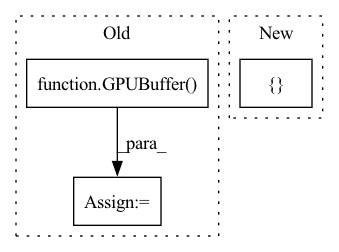

Pattern ID :34709
Before Change
def _processing_op(bufs: List[Tuple[str, GPUBuffer]]=[], code:str="acc", C=None):
if C is not None:
ret = GPUBuffer( C.out_shape)
ints = "".join(f"int {x} = {getattr(C, x)};" for x in ["H", "W", "ys", "xs", "dx", "dy", "px", "py"] + (["cin"] if C.cin == 1 else []))
params = [(f"int {x}", getattr(C, x)) for x in ["groups", "rcout", "oy", "ox", "iy", "ix"] + (["cin"] if C.cin > 1 else [])]
options = []
if C.px == 0 and C.py == 0: options.append("-DALLVALID")After Change
ewbufs = bufs
elementwise_prefix = "\n".join([contiguous_view(name, buf) for name, buf in ewbufs])+ \
"inline float _ewop("+",".join([ "int gid", "float acc"In pattern: SUPERPATTERN
Frequency: 3
Non-data size: 3
Instances Fragment ID: 99586260
Project Name: geohot/tinygrad
Commit Name: a3538e225a90a94c7d897da837c0ade621814ec0
Time: 2022-06-20
Author: 72895+geohot@users.noreply.github.com
File Name: tinygrad/llops/ops_gpu.py
M Class Name: AnonimousClass
N Class Name: AnonimousClass
M Method Name: _processing_op(3)
N Method Name: _processing_op(3)
M Parent Class:
N Parent Class:
M File Name: tinygrad/llops/ops_gpu.py
N File Name: tinygrad/llops/ops_gpu.py
M Start Line: 73
M End Line: 92
N Start Line: 59
N End Line: 84
Before Change
}
def unary_op(op, x):
ret = GPUBuffer( x.shape)
unop = clbuild("unop",
__kernel void unop(__global const float4 *a_g, __global float4 *res_g) {
int gid = get_global_id(0);
float4 A = a_g[gid];After Change
ewop([prod(ret.shape)], None, ret.cl, *[buf.cl for _, buf in bufs])
return ret
def unary_op(op, x): return elementwise_op([ ("A", x) Fragment ID: 99586257
Project Name: geohot/tinygrad
Commit Name: d05e7c291ad428ba3584a1529e6d71c264c5b7b9
Time: 2022-06-19
Author: 72895+geohot@users.noreply.github.com
File Name: tinygrad/llops/ops_gpu.py
M Class Name: AnonimousClass
N Class Name: AnonimousClass
M Method Name: unary_op(2)
N Method Name: unary_op(2)
M Parent Class:
N Parent Class:
M File Name: tinygrad/llops/ops_gpu.py
N File Name: tinygrad/llops/ops_gpu.py
M Start Line: 67
M End Line: 75
N Start Line: 82
N End Line: 82
Before Change
return ret
def binary_op(op, x, y):
ret = GPUBuffer( x.shape)
assert x.shape == ret.shape and y.shape == ret.shape
binop = clbuild("binop",
__kernel void binop(__global const float4 *a_g, __global const float4 *b_g, __global float4 *res_g) {
int gid = get_global_id(0);After Change
return ret
def unary_op(op, x): return elementwise_op([("A", x)], code_for_op[op])
def binary_op(op, x, y): return elementwise_op([ ("A", x), ("B", y) Fragment ID: 99586256
Project Name: geohot/tinygrad
Commit Name: d05e7c291ad428ba3584a1529e6d71c264c5b7b9
Time: 2022-06-19
Author: 72895+geohot@users.noreply.github.com
File Name: tinygrad/llops/ops_gpu.py
M Class Name: AnonimousClass
N Class Name: AnonimousClass
M Method Name: binary_op(3)
N Method Name: binary_op(3)
M Parent Class:
N Parent Class:
M File Name: tinygrad/llops/ops_gpu.py
N File Name: tinygrad/llops/ops_gpu.py
M Start Line: 78
M End Line: 88
N Start Line: 83
N End Line: 83